我是高恒，一名 AIGC 内容创作生成者，专注视觉设计、AI 影像生成与视频创作。
视频、视觉素材和相关文档，按项目类别整理。
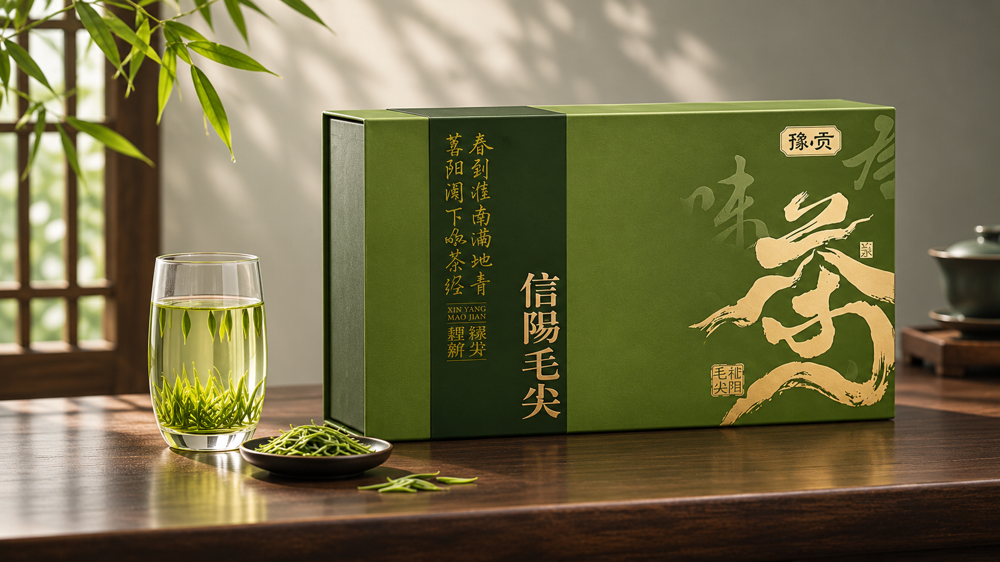
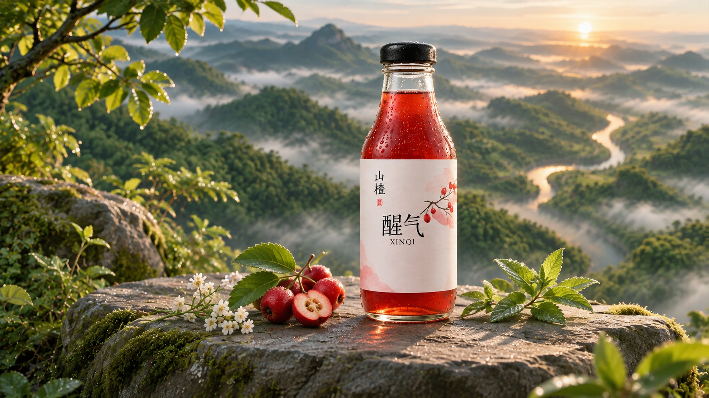
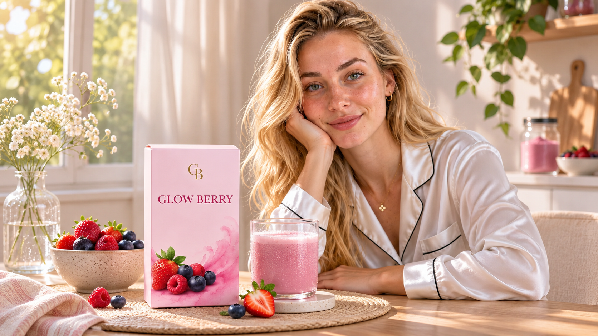
浏览品牌设计与 IP 形象等视觉作品。
查看视觉设计图片 →
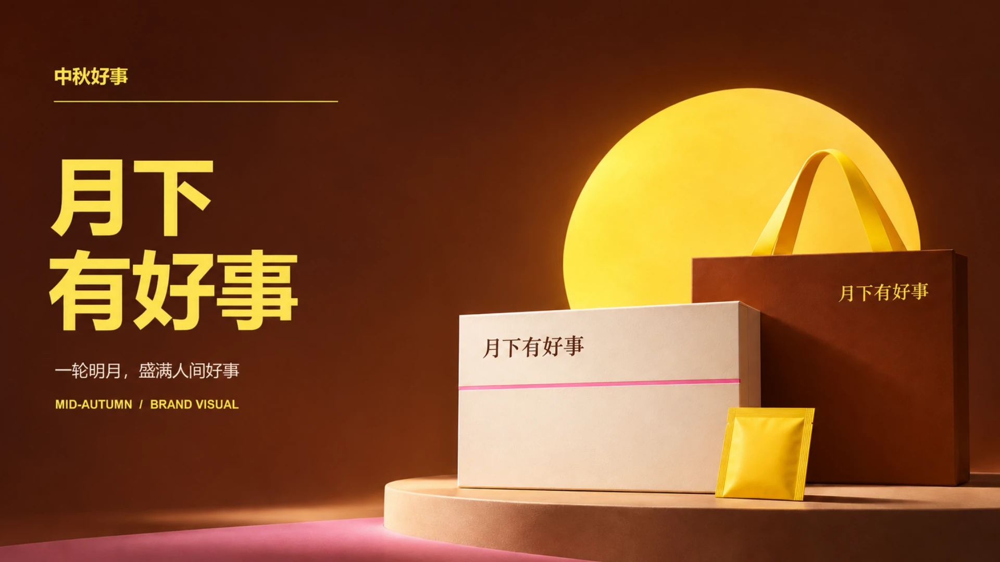
中秋主题品牌视觉与礼盒包装设计。
电商品牌的视觉识别与应用设计。
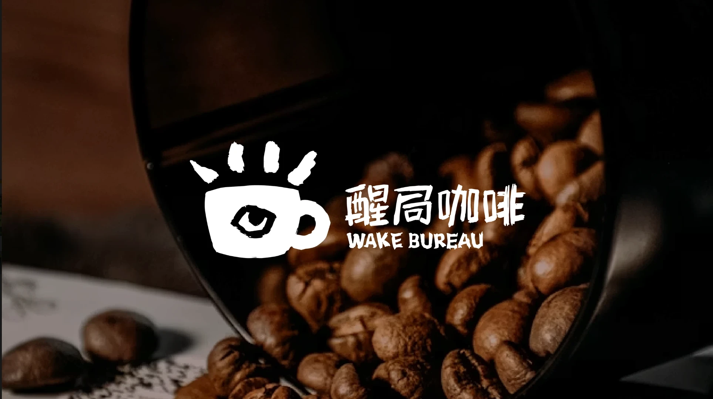
咖啡品牌的标志、包装与空间视觉设计。
阿星 Stella 的角色设定、表情与周边设计。
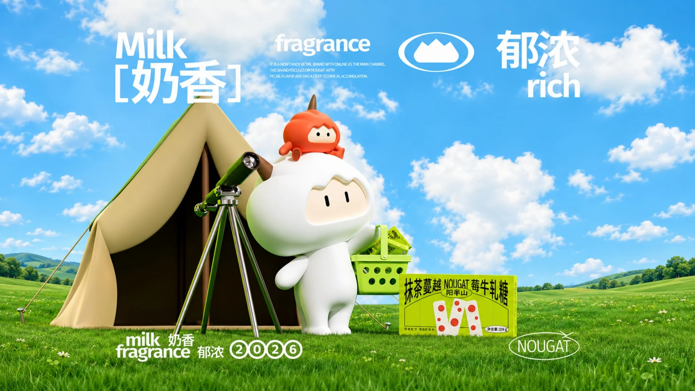
品牌形象、产品包装与视觉应用设计。
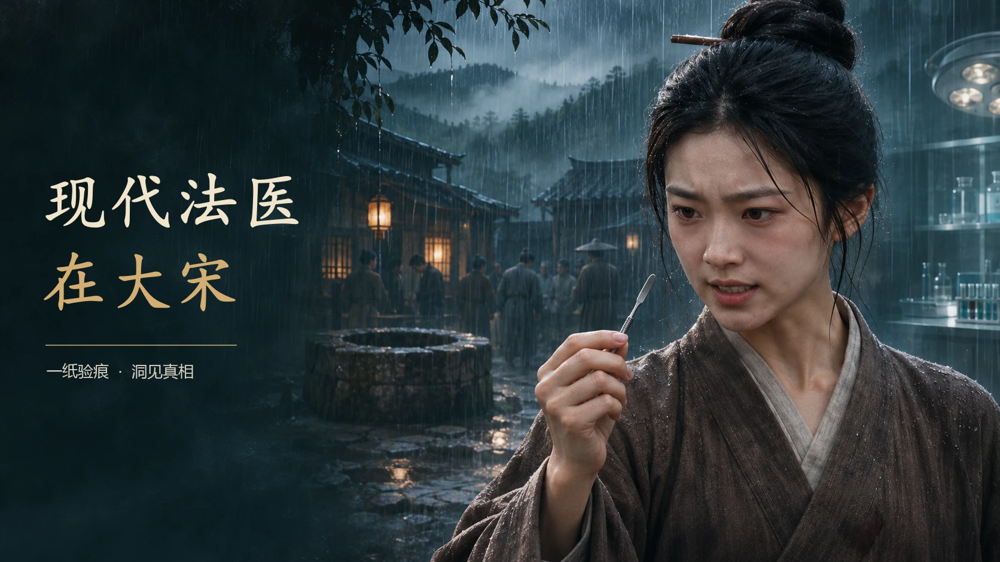
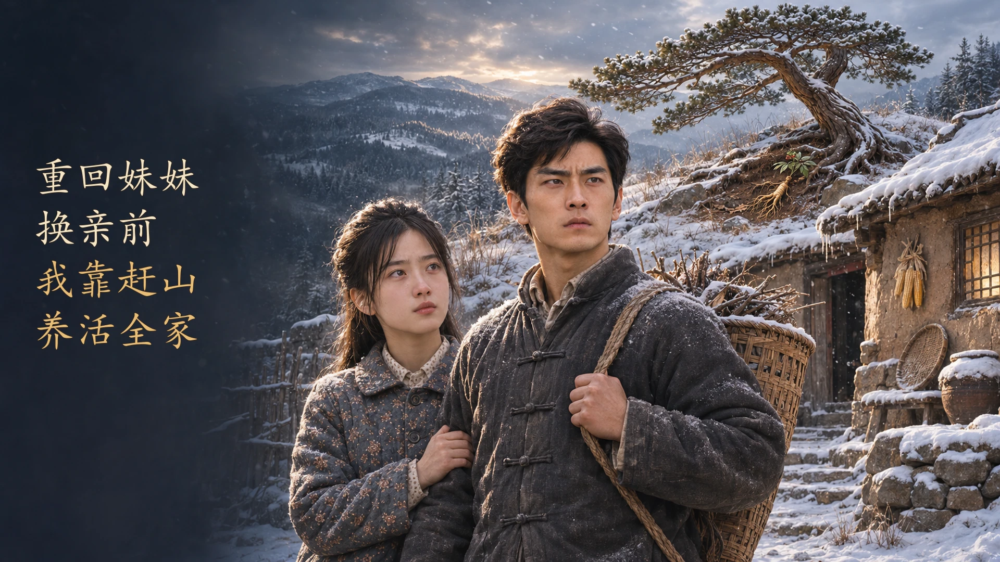
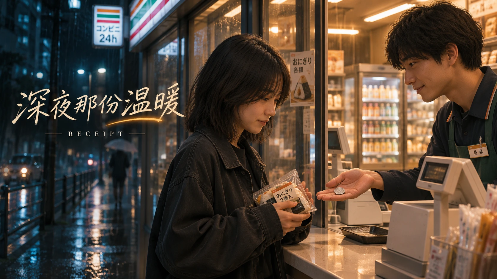
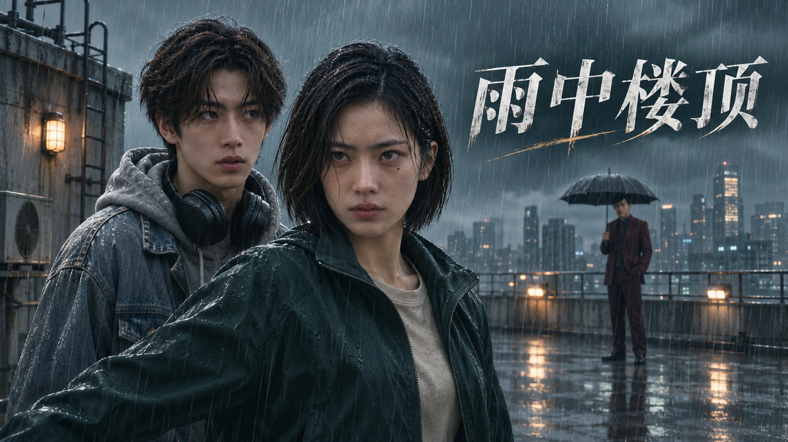
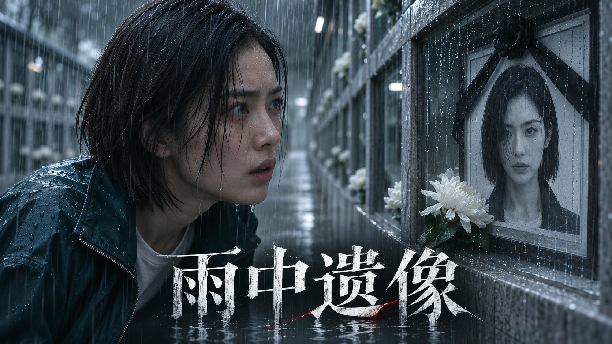
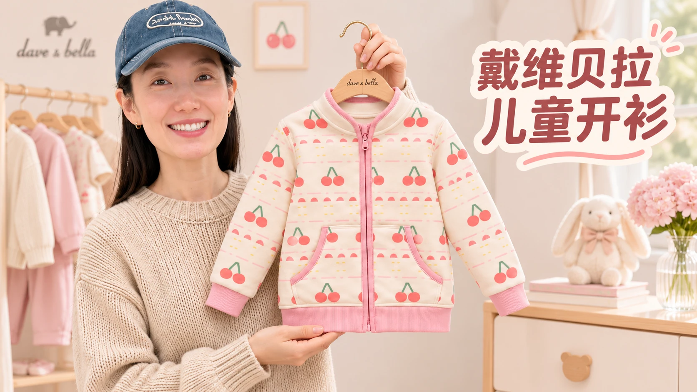
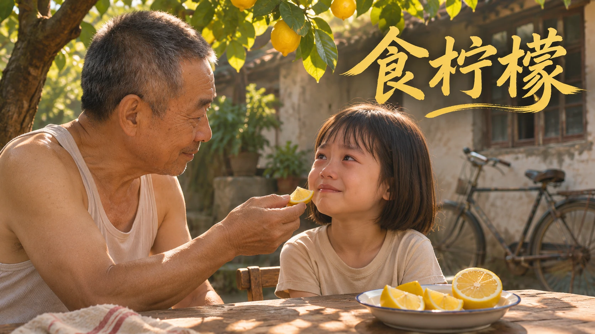